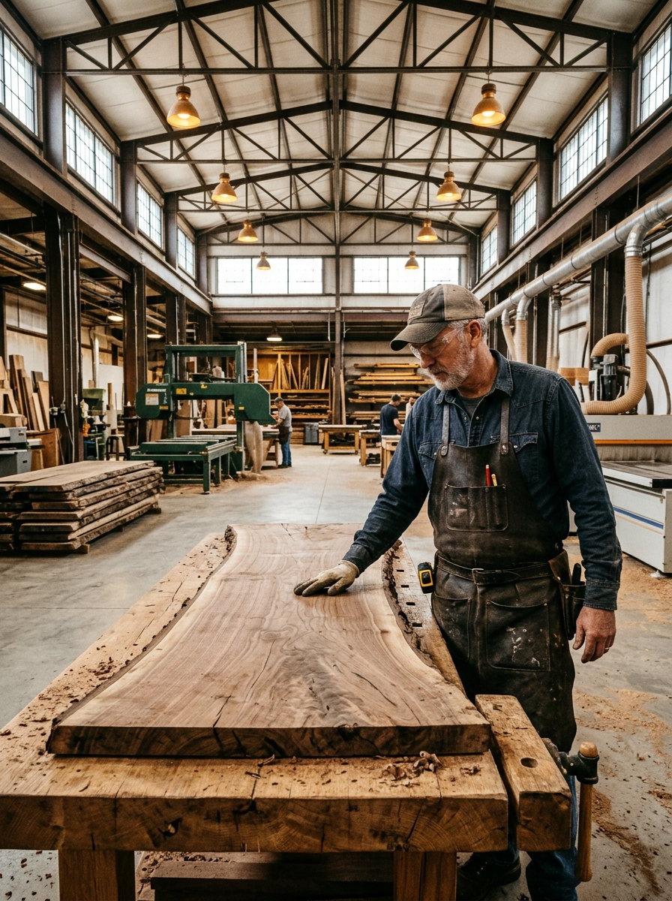
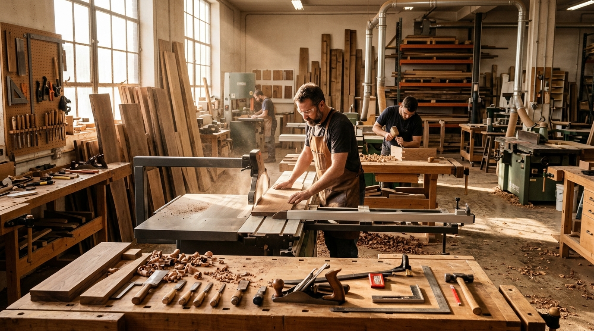
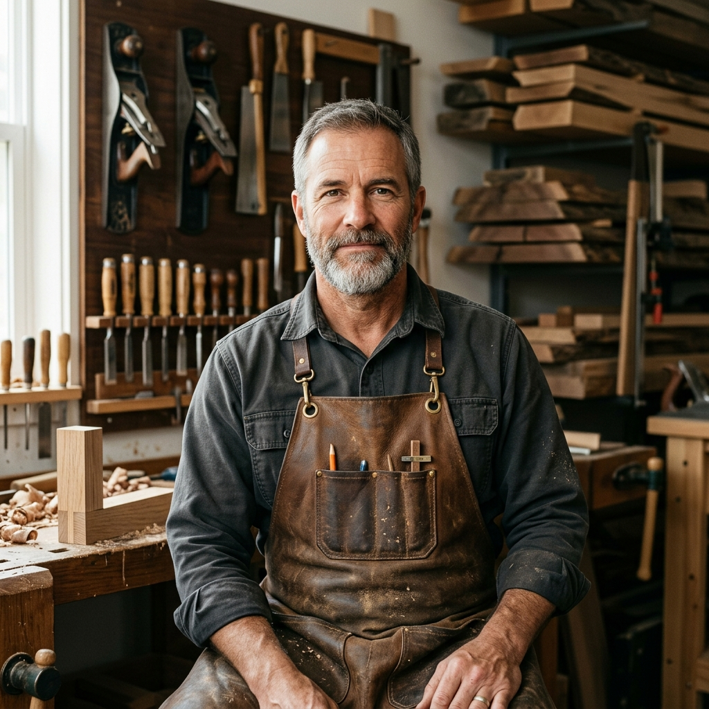
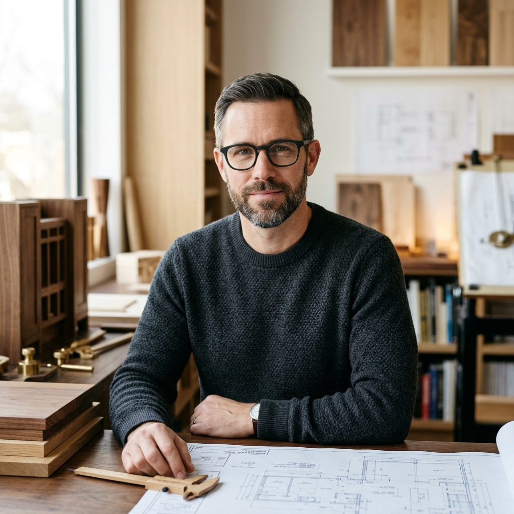
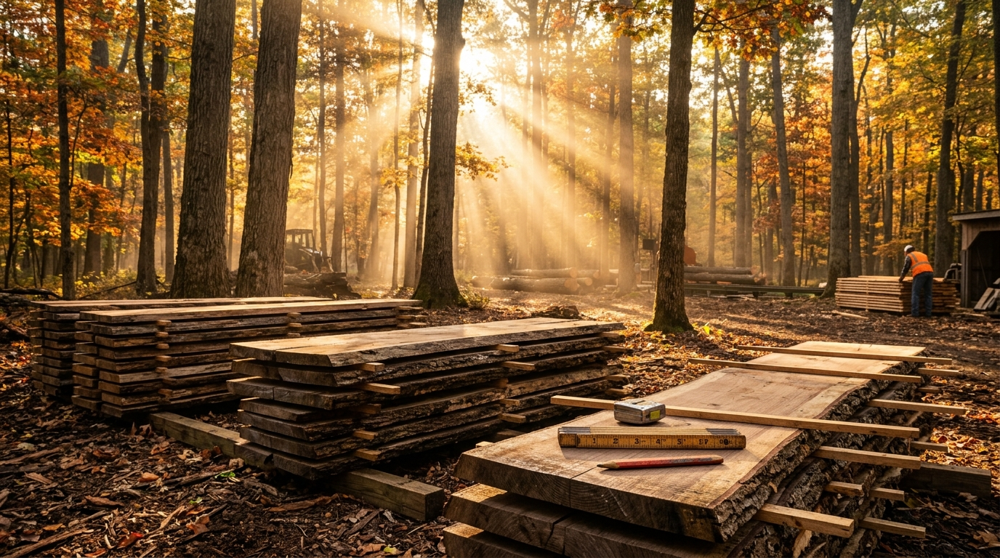
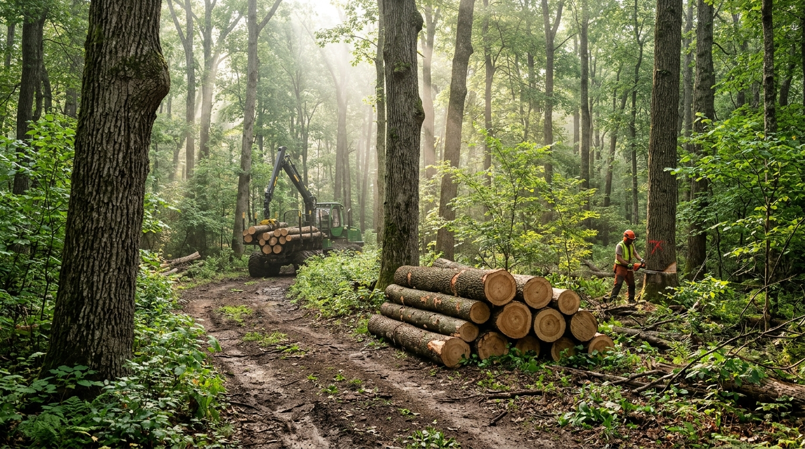
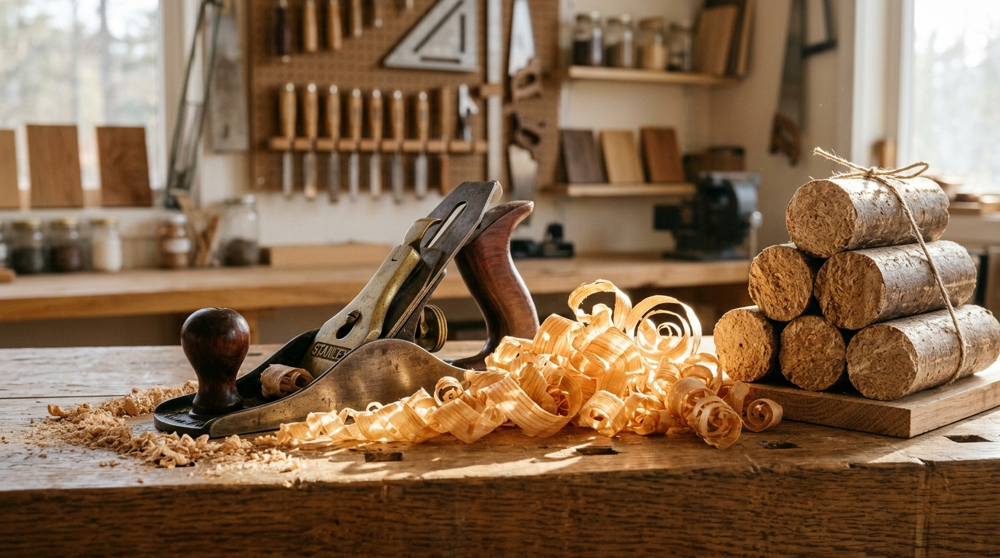

Rejecting Disposable Furniture for Generational Millwork
When master woodworker Marcus Vance built our first dining credenza in 1998, he observed a disturbing industry trend: high-end interiors were being filled with hollow core boards, cheap cam-lock screws, and toxic paper foils masquerading as wood.
TimberCraft was established as a direct rebellion against temporary carpentry. We believe interior woodwork should mature gracefully like fine wine—developing a rich natural patina over decades rather than peeling at the edges in three years.
"Wood is alive. It expands with summer humidity and breathes in winter chills. If you do not respect its grain direction and give it proper joinery, it will twist. If you understand it, it will outlast the building."— Marcus Vance, Founder & Master Craftsman


The 5-Step TimberCraft Workflow
From your preliminary layout to final hand-rubbed finish, every milestone is monitored for laser precision.
3D Laser Scan
We map your walls with Leica laser scanners to identify slope, drywall bowed sections, and exact socket offsets.
Timber Calibration
Hardwood lumber is moisture-tested (8–10%) and visually bookmatched to guarantee uninterrupted cathedral grain flow.
Workshop Joinery
Milled on German Altendorf sliding saws and precision mortised. Carcasses are dry-assembled and checked for square.
4-Stage PU Finish
Multi-coat polyurethane sealant in a positive-pressure dust-free booth, finished with hand-rubbed organic waxes.
White-Glove Fit
Our uniformed carpentry crew installs on site with HEPA dust extractors, micro-adjusting every hinge to perfection.
The Master Woodworkers
Over a century of combined bench carpentry and architectural engineering experience.

Marcus Vance
Founder & Master Joiner
28 years crafting fine timber joinery. Trained in traditional European dovetail and mortise techniques.
Elena Rostova
Lead Architectural Joiner
Specialist in hydraulic pivot doors, solid hardwood entryways, and custom brass inlay joinery.

Darius Thorne
Cabinetry CAD Director
Pioneer of laser 3D point-cloud room scanning and Blum concealed kinematic hardware integration.
Kenneth Zhao
Hardwax & PU Finisher
14 years mastering multi-coat Italian polyurethane lacquers, wire-brushing, and organic oil patinas.
Twenty-Eight Years of Joinery Evolution
A chronicle of unwavering bench carpentry traditions, architectural innovation, and expanding capabilities from 1998 to the present day.
The Solitary Bench in Portland
Marcus Vance opens a modest 600 sq.ft timber atelier in a converted carriage house, crafting custom dining credenzas and solid oak refectory tables with traditional blind mortise-and-tenon joints.
Acoustic Slat Paneling Breakthrough
Pioneered continuous sequence-matched fluted wall cladding with concealed acoustic backing for Pacific Northwest private estates, winning our first Architectural Woodwork Guild Award.
14,000 Sq.Ft Atelier & 5-Axis CNC
Relocated to our current climate-controlled facility, investing in German Altendorf sliding saws, positive-pressure finishing booths, and automated precision mortising to serve international architects.
AWI Premium & Class-A Fire Certification
Accredited by the Architectural Woodwork Institute (AWI) for Premium Grade millwork and ASTM E84 Class-A flame spread compliance, enabling landmark luxury hotel atriums and civic headquarters.
Generational Hardwoods & 3D LiDAR
Over 500 completed luxury residential commissions and 40+ commercial towers. Every project surveyed with millimeter-accurate 3D Faro LiDAR scanners and fabricated from 100% FSC-certified timber.

Sustainable Forestry & Patient Seasoning
Enduring carpentry begins with respect for the living tree. We preserve timber integrity through responsible harvesting, solar kiln conditioning, and circular recycling.

FSC Certified100% Certified Sourcing
All walnut, white oak, and maple originate from PEFC and FSC-certified managed family forests. We plant three saplings for every mature tree harvested.
 Solar Kiln
Solar Kiln
18-Month Dual Seasoning
12 months of gentle open-air timber stickering followed by 6 months in low-temperature solar vacuum kilns, balancing cellular moisture to a stable 8–10%.
 VOC-Free Finish
VOC-Free Finish
Zero-Formaldehyde Resins
We exclusively specify Medite Premier MR moisture-resistant cores with plant-based soy adhesives and VOC-free German hardwax oils meeting LEED v4 criteria.

Zero LandfillCircular Shavings Upcycling
Zero timber ends in landfill. Shavings and sawdust from our Altendorf saws are pressed on-site into clean heating briquettes to warm our winter workshop.
Experience Our Hardwood Specimen Atelier
Tour our 14,000 sq.ft Portland facility, inspect live-edge slab sequences in person, and review precision CAD section drawings with Marcus Vance.
Atelier Standards & Guarantees
Every joinery commission is fabricated under strict architectural tolerances and backed by certified sustainable sourcing.
AWI Certified
Architectural Woodwork Institute Premium Grade Standards for joinery tolerances and finish specs.
FSC Certified Timber
100% legally and responsibly harvested sustainable hardwoods with full chain-of-custody documentation.
10-Year Warranty
Guaranteed against joint separation, wood warp, structural deflection, and German hinge failure.
Fixed Quote Guarantee
Zero surprise variation orders or hidden on-site fees once our precision 3D laser measurement is locked.
Frequently Asked Questions
Learn more about our master joiners, AWI certification standards, sustainable timber harvesting, and workshop tour visits.
The Architectural Woodwork Institute (AWI) Premium Grade is the highest recognized quality standard in North American architectural woodwork. It governs sub-millimeter tolerances for joint tight-fit, precision flitch sequence-matching across multiple doors, flawless lacquer sheen consistency, and strictly documented lumber seasoning.
We work exclusively with 100% FSC-certified timber suppliers who practice responsible selective harvesting. Our American Black Walnut and White Oak are sustainably harvested in the Pacific Northwest and Midwest, our plantation Teak comes with full CITES and Lacey Act documentation, and every flitch is traceable back to its harvested timber lot.
Yes, our atelier is open to clients, architects, and interior designers Monday through Friday by appointment. You can tour our kiln-drying seasoning rooms, inspect live 5-axis CNC machining, observe hand-planing at the joiner's bench, and hand-select the exact hardwood slabs earmarked for your commission.
Unlike mass-market factories using urea-formaldehyde adhesives and solvent-heavy lacquers, TimberCraft builds carcasses with NAF (No Added Formaldehyde) certified phenolic bonding resins. Our finishes are 100% organic plant-based hardwax oils and food-contact safe, zero-VOC waterborne coatings that emit zero harmful off-gassing into your home.
Every project lead at TimberCraft is a certified journeyman or master carpenter with a minimum of 15 years of dedicated bench experience. Many of our craftsmen trained in European apprenticeship guild programs, bringing rare expertise in blind dovetails, mortise-and-tenon framing, hand-cut marquetry, and heritage oil finishing.